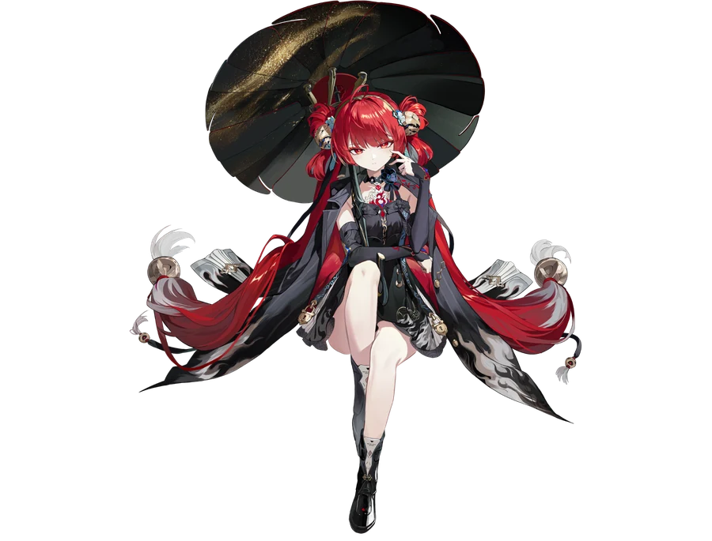

独有的语言
自称、口癖、句式、停顿与称呼变化。相似的语气不意味着相同的人格。
一个角色，不是几条形容词的组合。
从原作剧情、语音与行为选择中，提炼表达习惯、关系边界和决策倾向。用尽量精简的人格卡，保留那个角色最难被替代的部分。
这是角色炼化方法的产品化极简展示，并非在线运行的炼化工具。
真正使角色鲜活的，不只是外在标签，而是她在不同情境下如何表达、靠近、拒绝，以及作出选择。
自称、口癖、句式、停顿与称呼变化。相似的语气不意味着相同的人格。
不同对象、不同经历下的亲疏距离与反应边界，而非一键套用的“好感度”。
角色相信什么、回避什么、愿意承担什么。决策机制比静态形容词更有辨识力。
尽量保留原作可核查的行为证据，区分“角色怎么想”与“角色怎么说”，让压缩不等于抹平差异。
整理剧情文本、角色语音、互动情境与重要行为，区分明确证据和未经验证的推断。
从表层表达、中层情绪与关系反应，到深层价值和决策逻辑，寻找稳定、独特的角色特征。
减少冗余标签，将关键特征压缩为可复用的人格结构，再用情境测试检查语气与人格是否漂移。
两份不同角色的炼化实例：锁暝与昔涟。点击作品卡片即可阅读对应的 DeepSeek 公开对话，内容以原始记录为准。

体验锁暝的角色炼化对话，观察她的措辞、称呼、情绪表达与关系边界。
体验昔涟的角色炼化对话，感受她的表达习惯、情绪反馈与人物辨识度。
两份示例链接由作者提供，托管于 DeepSeek；本网站不复制对话内容。外部分享页的可访问性与内容展示由原平台决定。
如果角色炼化对你有所帮助，欢迎自愿赞助。没有付费门槛、解锁承诺或强制支持，感谢你对创作的认可。
请使用支付宝扫一扫。收款信息以扫码后支付宝客户端显示内容为准。
角色炼化目前以理念、结构与实际对话示例的极简形式呈现。这里的目标不是创造一张万能人格卡，而是探索如何更准确地保存角色的表达与行为特征。